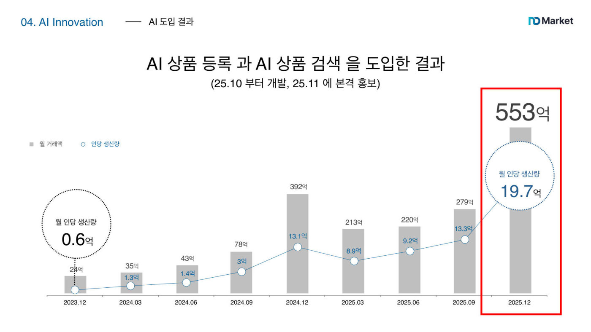

남도마켓은 남대문·동대문 도매 상인이 상품을 올리면 전국의 소매 가게 사장님들이 보고 대량으로 사 가는 B2B(기업 간 거래) 플랫폼이다. 그런데 발표자가 팀원들과 107개 가게를 찾아가 2시간씩 인터뷰해 보니 "아직 상품이 많이 없다"는 답이 돌아왔고, 한 달치 검색어 14만 개를 전 직원이 직접 검색해 확인해 보니 정말 상품이 없었다. 원인을 파고들자 두 가지가 나왔다. 첫째, 상품을 올리는 도매 상인이 대부분 50~70대인데 사진·카테고리·색상·소재·설명을 전부 손으로 입력해야 해서 매장에 걸린 상품 200~300개를 올리는 것이 사실상 불가능했다(전체 문제의 70%). 둘째, 상품이 있어도 검색어와 제목이 정확히 일치해야만 나오는 낡은 검색 방식 때문에 검색에서 빠졌다(30%). "왜 등록 안 하시냐"고 묻자 돌아온 답은 "너 같으면 쓰겠냐"였다.
상인들이 "사진 한 장은 올릴 수 있다"고 한 말에서 출발했다. 핸드폰으로 찍은 사진 한 장을 올리면 AI가 약 15초 만에 상품명·카테고리·색상·소재·설명을 알아서 채워 주고, 가격만 상인이 직접 입력하는 등록 시스템을 만든 것이다. 회원가입도 없애서 사업자등록번호와 휴대폰 번호만 넣으면 바로 시작된다. 놀라운 점은 개발 기간인데, AI에게 말로 지시해 프로그램을 만드는 바이브 코딩으로 코딩 3일, 상인 검증 4일, 테스트 3일, 총 10일 만에 실제 서비스로 내놨다. 검색 문제는 하이브리드 검색으로 풀었다. 단어가 정확히 일치해야 찾아 주는 기존 방식(BM25)에 단어의 의미를 숫자로 바꿔 비슷한 뜻까지 찾아 주는 AI 임베딩을 결합해, "맨투맨"을 검색하면 "스웨트셔츠"도 나오고 "가을 데이트 룩" 같은 말로도 상품을 찾을 수 있게 했다. 'ㅁㅌㅁ' 같은 초성 입력, 오타 교정, 자동완성에 사진으로 찾는 이미지 검색까지 붙였는데, 팀원 제안으로 가볍게 넣은 이미지 검색이 지금은 전체 검색의 4분의 1을 차지한다.
새로 등록되는 상품이 주 1,000개에서 2,000개로 119.5% 늘었고, 등록 담당 직원에게 월 250~300만 원을 쓰던 도매상들은 그 비용을 아끼게 됐다. 200억 선에 머물던 월 거래액은 도입 두 달 만에 553억으로 2배 넘게 뛰었다. 직원 26명, 투자금 27억 원으로 직원 1인당 연 153억 원어치 거래를 만들어 내는데, 직원 189명에 800억 원을 투자받은 업계 1위(1인당 31억)의 5배 수준이다. 성공을 본 배송팀·세일즈팀까지 전 직원이 바이브 코딩을 배워 4개월간 36개 프로젝트를 만들었고, 잘 만들면 월급도 오른다. 발표 전날에는 50억 원 투자 유치가 확정됐고, 앞으로는 영수증 사진과 음성만으로 주문·정산까지 처리하는 도매 시장의 운영체제(OS)가 되는 것이 목표다.